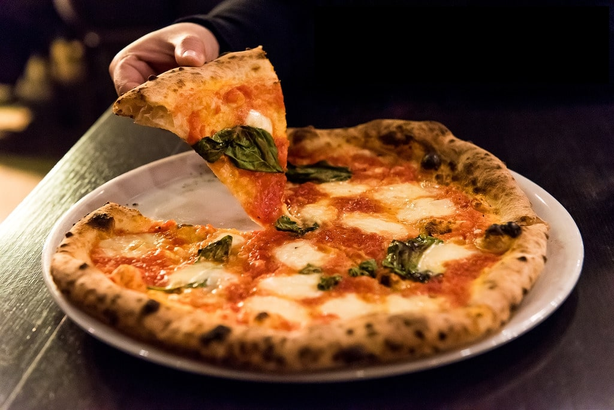

pizza mozzarella
tagliatele met tomatensaus en kaas
rundvlees burger met paprika

Ingredienten
- Pizza deeg
- 2 blikjes tomatensaus
- 150g kaas (mozzarella)
- 6 eetlepels olijfolie
- zout naar smaak
Bereiding
- Rol het deeg uit en beleg met tomatensaus, en mozarellaschijfjes.
- Overpoeder met bloem en wat olijfolie.
- Bak 8 minuten in de oven op 250 graden.